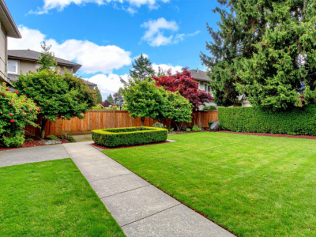
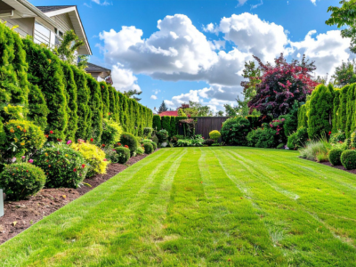
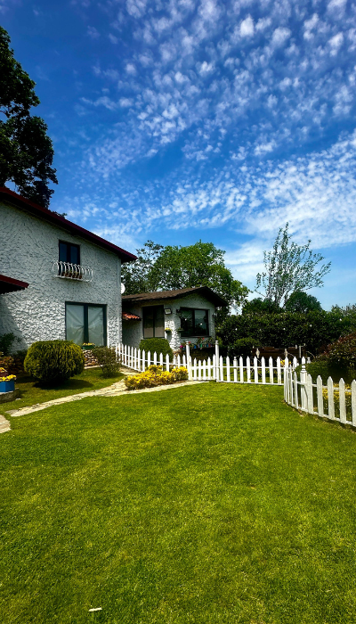
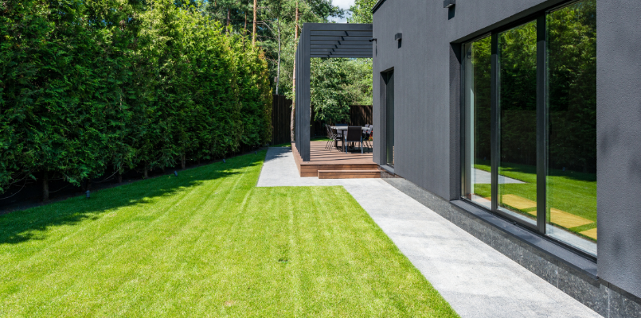

Un savoir-faire qui fait fleurir vos espaces
Depuis plus de 15 ans, Jean-Luc Verdier met son expertise et sa passion au service de vos extérieurs. Attentif à chaque détail, il crée, entretient et transforme vos jardins pour en faire de véritables lieux de vie. À l’écoute de vos besoins, il privilégie des méthodes respectueuses de la nature et propose des solutions adaptées à votre environnement, vos envies et vos saisons. Avec Les Jardins du Sud, votre jardin devient un espace harmonieux, équilibré et durable.
Contact
Services
Entretien
Tonte & entretien régulier

Création
Création de massifs floraux
Installation
Pose de clôtures / pavés
Arrosage
Arrosage automatique & optimisation de l’eau
Taillage
Taille d’arbres et haies
Plantation
Plantation d’arbustes et aménagement végétal
Derniers travaux



